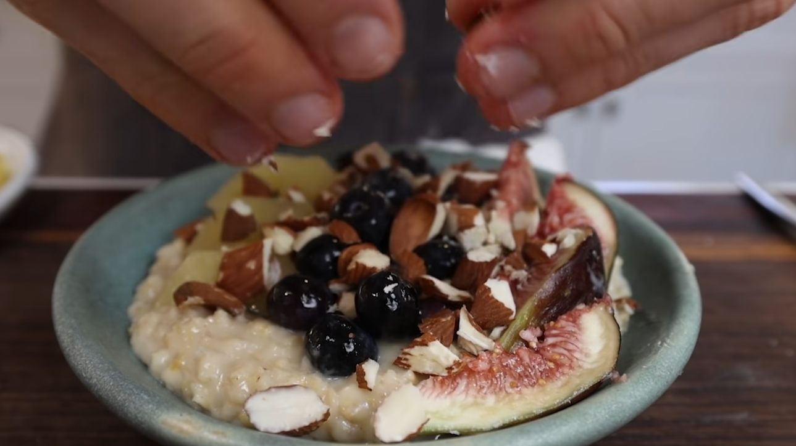

Flavor Bomb Oatmeal Recipe
This is a spin on the good old oatmeal recipes.

Ingredients
- 1 1/2 cup of oats
- 2 cups of almond milk (or any milk of your preference)
- 1 cup of water
- Orange zest
- Orange juice
- Freshly grated ginger
- Freshly grated nutmeg
- Pinch of salt
Method
- To a pot, add in the oats, almond milk, orange zest, orange juice, grated ginger, grated nutmeg, and salt.
Mix it up and set the flame to medium low. Let that cook and thicken while you prep your toppings.
- Chop the almonds, cut up your figs and kiwis, and wash your blueberries.
- Once the oatmeal is nice and thick, add in a touch of maple syrup to taste. Pour into a bowl and top with all your toppings. Enjoy while warm!
This recipe is courtesy of Pro Home Cooks. This is also a go-to meal for me.
Return to home page